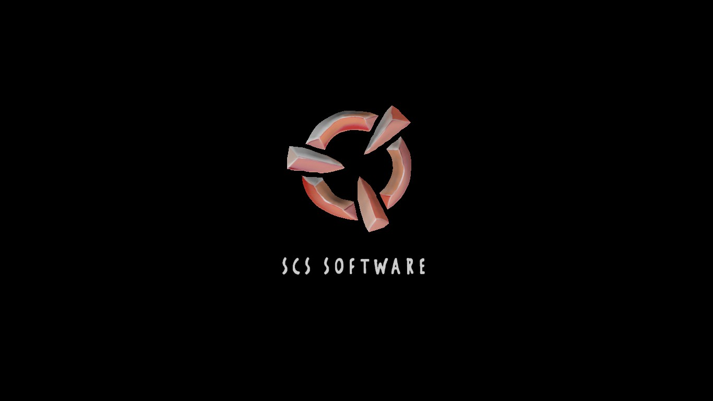

SCS
SCS Software — частная компания, специализирующаяся на разработке компьютерных игр. Была образована в 1997 году. Наиболее известные игры — серии 18 Wheels of Steel, Hunting Unlimited, Truck Simulator.
Компания была основана в 1997 году. Первой игрой фирмы стал Rocky Mountain Trophy Hunter 3 — симулятор охоты, вышедший в 2001 году. Второй игрой — симулятор подводной охоты Shark! Hunting the Great White, вышедший также в 2001 году и ставший первой игрой компании, сделанной на новом движке Prism3D. В 2002 году была выпущена игра Duke Nukem: Manhattan Project, разработкой которой занималась компания Sunstorm Interactive используя игровой движок SCS Software. Тогда же вышли 911 Fire Rescue и Hard Truck: 18 Wheels of Steel. Последняя игра, сделанная в жанре симулятора дальнобойщика, открыла серию игр 18 Wheels of Steel. В 2008 году была выпущена новая игра компании в жанре симулятора дальнобойщика — Euro Truck Simulator. Выход Euro Truck Simulator 2 состоялся в 2012 году. В феврале 2016 года разработчики выпустили American Truck Simulator, новый симулятор, локация которого представляет собой Соединённые Штаты Америки.